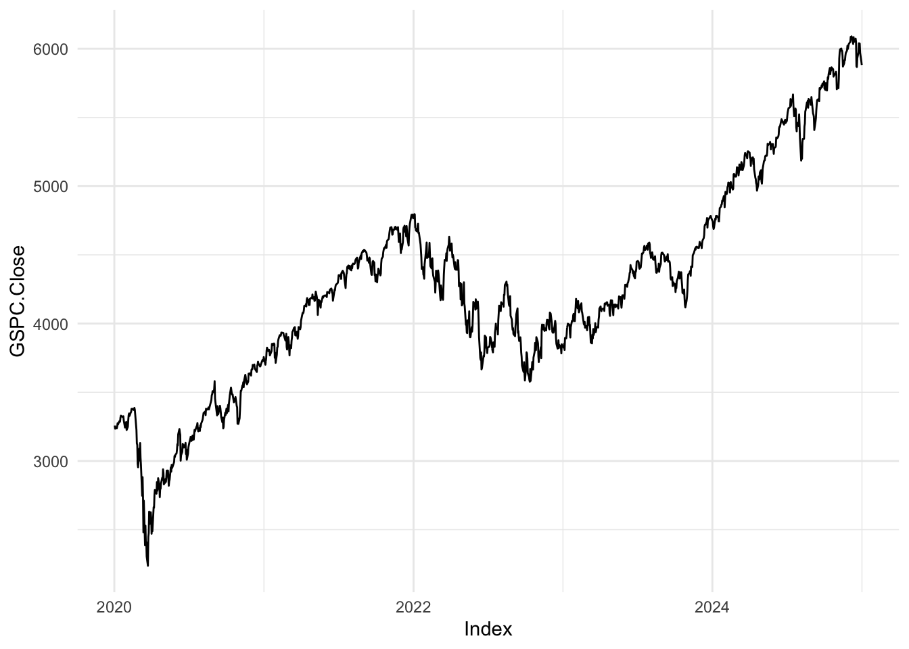
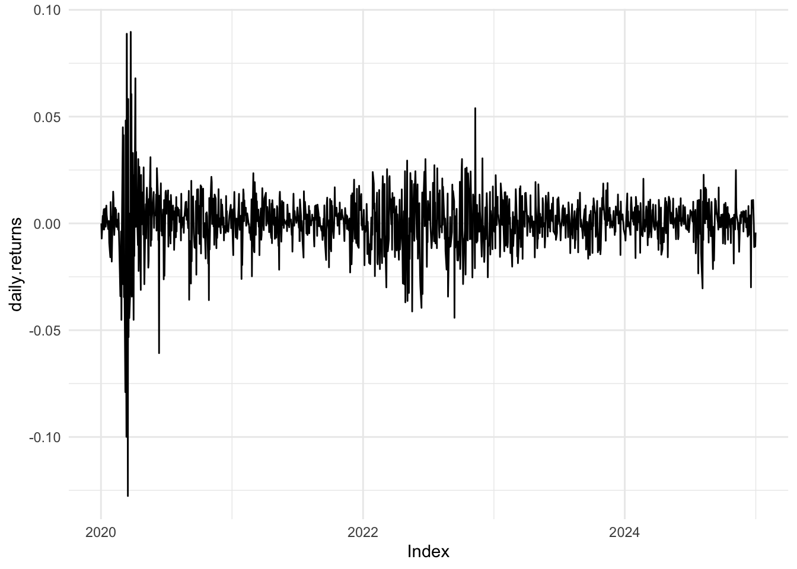
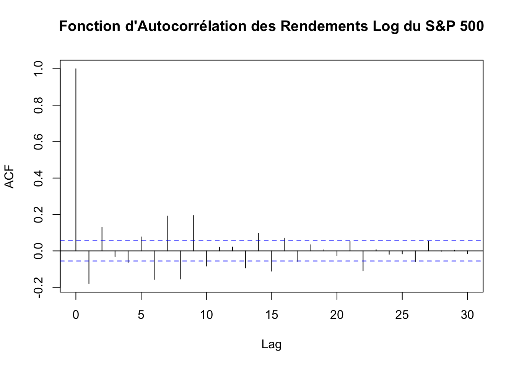
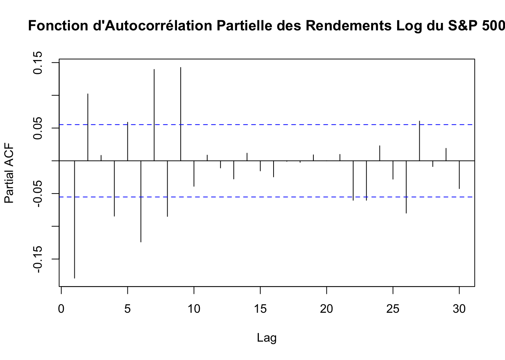

5Caractéristiques Empiriques des Séries Financières
Les séries financières présentent des caractéristiques particulières qui diffèrent souvent des séries temporelles standards. Comprendre ces caractéristiques est essentiel pour développer des modèles économétriques précis et robustes. Dans cette section, nous explorerons les principales caractéristiques empiriques des séries financières et illustrerons leur analyse à l’aide du langage R.
5.1 Visualisation des Séries Financières
La première étape dans l’analyse des séries financières consiste à visualiser les données pour identifier des tendances, des cycles, des anomalies ou des comportements particuliers.
5.1.1 Tracé des Prix et des Rendements
# Installation et chargement des packages nécessairesif(!require(quantmod)) {install.packages("quantmod")library(quantmod)}
Loading required package: quantmod
Loading required package: xts
Loading required package: zoo
Attaching package: 'zoo'
The following objects are masked from 'package:base':
as.Date, as.Date.numeric
Loading required package: TTR
Registered S3 method overwritten by 'quantmod':
method from
as.zoo.data.frame zoo
# Téléchargement des données financières (par exemple, S&P 500)getSymbols("^GSPC", src ="yahoo", from ="2020-01-01", to ="2025-01-01")
[1] "GSPC"
prix <-Cl(GSPC)# Calcul des rendements logrendements <-dailyReturn(prix, type ="log")# Tracé des prixautoplot(prix, main ="Prix du S&P 500", ylab ="Prix", xlab ="Date") +theme_minimal()

# Tracé des rendementsautoplot(rendements, main ="Rendements Log du S&P 500", ylab ="Rendement Log", xlab ="Date") +theme_minimal()

Interprétation : - Le graphique des prix montre l’évolution du SP 500 sur la période spécifiée. - Le graphique des rendements log révèle la variation quotidienne des prix, facilitant l’identification de la volatilité et des anomalies.
5.2 Statistiques Descriptives
Les statistiques descriptives fournissent un résumé quantitatif des caractéristiques centrales et de la dispersion des séries financières.
Interprétation : - Moyenne : Indique le rendement moyen quotidien. - Médiane : Représente le rendement central, moins sensible aux valeurs extrêmes. - Variance et Écart-type : Mesurent la dispersion des rendements autour de la moyenne. - Asymétrie : Indique la symétrie de la distribution des rendements. Une asymétrie positive suggère une queue à droite plus longue. - Aplatissement : Compare la “taille” des queues de la distribution par rapport à une distribution normale (kurtosis = 3).
Interprétation : - L’histogramme permet de visualiser la distribution des rendements. - La courbe de densité superposée offre une estimation lisse de la distribution, facilitant l’identification de l’asymétrie et de l’aplatissement.
5.3 Stationnarité et Tests de Racine Unitaire
La stationnarité est une propriété essentielle pour de nombreux modèles économétriques. Une série stationnaire a des propriétés statistiques constantes au fil du temps.
5.3.1 Test de Dickey-Fuller Augmenté (ADF)
# Installation et chargement du package 'tseries' si nécessaireif(!require(tseries)) {install.packages("tseries")library(tseries)}
Loading required package: tseries
# Test ADF sur les rendements (qui sont généralement stationnaires)adf_rendements <-adf.test(rendements, alternative ="stationary")
Warning in adf.test(rendements, alternative = "stationary"): p-value smaller
than printed p-value
# Affichage des résultatsprint(adf_rendements)
Augmented Dickey-Fuller Test
data: rendements
Dickey-Fuller = -10.02, Lag order = 10, p-value = 0.01
alternative hypothesis: stationary
Interprétation : - Hypothèse Nulle (H0) : La série a une racine unitaire (non stationnaire). - Hypothèse Alternative (H1) : La série est stationnaire. - Si la p-valeur est faible (généralement < 0.05), on rejette H0 et conclut que la série est stationnaire.
5.3.2 Test de KPSS
# Installation et chargement du package 'tseries' si nécessaireif(!require(tseries)) {install.packages("tseries")library(tseries)}# Test KPSS sur les rendementskpss_rendements <-kpss.test(rendements, null ="Level")
Warning in kpss.test(rendements, null = "Level"): p-value greater than printed
p-value
# Affichage des résultatsprint(kpss_rendements)
KPSS Test for Level Stationarity
data: rendements
KPSS Level = 0.065383, Truncation lag parameter = 7, p-value = 0.1
Interprétation : - Hypothèse Nulle (H0) : La série est stationnaire. - Hypothèse Alternative (H1) : La série a une racine unitaire (non stationnaire). - Si la p-valeur est faible, on rejette H0 et conclut que la série n’est pas stationnaire.
5.4 Autocorrélation et Fonction d’Autocorrélation
L’autocorrélation mesure la corrélation d’une série avec ses propres valeurs décalées dans le temps. Elle est cruciale pour identifier la dépendance temporelle.
5.4.1 Fonction d’Autocorrélation (ACF) et Autocorrélation Partielle (PACF)
# Tracé de la fonction d'autocorrélation (ACF)acf(rendements, main ="Fonction d'Autocorrélation des Rendements Log du S&P 500")

# Tracé de la fonction d'autocorrélation partielle (PACF)pacf(rendements, main ="Fonction d'Autocorrélation Partielle des Rendements Log du S&P 500")

Interprétation : - ACF : Montre la corrélation des rendements avec leurs propres décalages. Des valeurs significatives aux premiers lags peuvent indiquer une dépendance temporelle. - PACF : Montre la corrélation des rendements avec leurs propres décalages, en contrôlant pour les corrélations intermédiaires. Utile pour identifier l’ordre d’un modèle AR.
5.4.2 Analyse de l’ACF et PACF
Modèles AR (AutoRégressifs) : Présentent une décroissance lente dans l’ACF et une coupure après un certain lag dans le PACF.
Modèles MA (Moyenne Mobile) : Présentent une coupure dans l’ACF et une décroissance lente dans le PACF.
Modèles ARMA/ARIMA : Combinaison des caractéristiques des modèles AR et MA.
5.4.3 Test de Normalité (Shapiro-Wilk)
# Test de normalité Shapiro-Wilk# Note : Ce test est sensible aux grandes tailles d'échantillon et peut rejeter la normalité même si les déviations sont minimesshapiro_test <-shapiro.test(coredata(rendements)[1:500]) # Limiter à 500 observations pour éviter l'erreur sur de grands échantillons# Affichage des résultatsprint(shapiro_test)
Shapiro-Wilk normality test
data: coredata(rendements)[1:500]
W = 0.80517, p-value < 2.2e-16
Interprétation : - Hypothèse Nulle (H0) : Les données suivent une distribution normale. - Hypothèse Alternative (H1) : Les données ne suivent pas une distribution normale.
Avec un grand nombre d’observations, le test tend à rejeter H0 même pour de petites déviations de la normalité.
5.5 Conclusion
L’analyse des caractéristiques empiriques des séries financières est fondamentale pour développer des modèles économétriques efficaces et précis. En maîtrisant les techniques de visualisation, les tests de stationnarité, l’analyse de l’autocorrélation, la modélisation de la volatilité, et l’examen des distributions des rendements, vous serez mieux équipé pour interpréter les données financières et prendre des décisions éclairées. Les exemples pratiques et les implémentations en R présentés dans cette section fournissent une base solide pour approfondir votre compréhension et application des concepts en économétrie financière.
N’hésitez pas à expérimenter avec différentes séries financières, à ajuster les paramètres des modèles, et à explorer d’autres techniques avancées pour enrichir votre analyse.